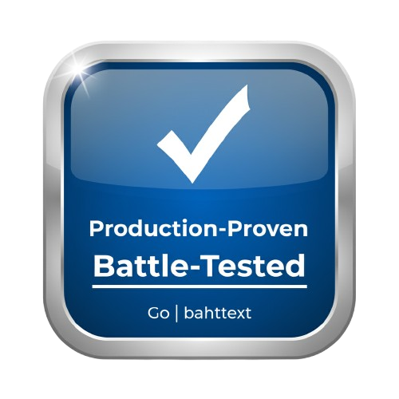
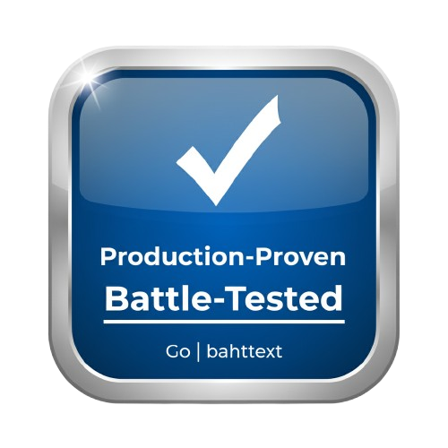

THB-to-Text คือไลบรารีที่สร้างขึ้นเพื่อการแปลงตัวเลขจำนวนเงินบาทไทยให้เป็นข้อความภาษาไทยอย่างถูกต้องและแม่นยำ โดยเลียนแบบฟังก์ชัน BAHTTEXT() ของ Microsoft Excel ซึ่งเป็นที่คุ้นเคยในวงการบัญชีและการเงิน
โค้ดที่มีคุณภาพสูง ทำงานได้อย่างรวดเร็ว ปลอดภัย และใช้งานง่ายที่สุดเท่าที่จะเป็นไปได้ สามารถนำไปใช้ได้จริงในระดับโปรดักชันได้จริง (Production Ready)
| Input | Code | Output (Thai Text) |
|---|---|---|
0 |
bahttext.Words(0) |
ศูนย์บาทถ้วน |
1 |
bahttext.Words(1) |
หนึ่งบาทถ้วน |
2 |
bahttext.Words(2) |
สองบาทถ้วน |
5 |
bahttext.Words(5) |
ห้าบาทถ้วน |
9 |
bahttext.Words(9) |
เก้าบาทถ้วน |
10 |
bahttext.Words(10) |
สิบบาทถ้วน |
11 |
bahttext.Words(11) |
สิบเอ็ดบาทถ้วน |
20 |
bahttext.Words(20) |
ยี่สิบบาทถ้วน |
21 |
bahttext.Words(21) |
ยี่สิบเอ็ดบาทถ้วน |
31 |
bahttext.Words(31) |
สามสิบเอ็ดบาทถ้วน |
55 |
bahttext.Words(55) |
ห้าสิบห้าบาทถ้วน |
99 |
bahttext.Words(99) |
เก้าสิบเก้าบาทถ้วน |
| Input | Code | Output (Thai Text) |
|---|---|---|
100 |
bahttext.Words(100) |
หนึ่งร้อยบาทถ้วน |
101 |
bahttext.Words(101) |
หนึ่งร้อยเอ็ดบาทถ้วน |
111 |
bahttext.Words(111) |
หนึ่งร้อยสิบเอ็ดบาทถ้วน |
130 |
bahttext.Words(120) |
หนึ่งร้อยยี่สิบบาทถ้วน |
221 |
bahttext.Words(221) |
สองร้อยยี่สิบเอ็ดบาทถ้วน |
505 |
bahttext.Words(505) |
ห้าร้อยห้าบาทถ้วน |
999 |
bahttext.Words(999) |
เก้าร้อยเก้าสิบเก้าบาทถ้วน |
| Input | Code | Output (Thai Text) |
|---|---|---|
1000 |
bahttext.Words(1000) |
หนึ่งพันบาทถ้วน |
1001 |
bahttext.Words(1001) |
หนึ่งพันเอ็ดบาทถ้วน |
1111 |
bahttext.Words(1111) |
หนึ่งพันหนึ่งร้อยสิบเอ็ดบาทถ้วน |
2500 |
bahttext.Words(2500) |
สองพันห้าร้อยบาทถ้วน |
9999 |
bahttext.Words(9999) |
เก้าพันเก้าร้อยเก้าสิบเก้าบาทถ้วน |
| Input | Code | Output (Thai Text) |
|---|---|---|
10000 |
bahttext.Words(10000) |
หนึ่งหมื่นบาทถ้วน |
100000 |
bahttext.Words(100000) |
หนึ่งแสนบาทถ้วน |
123456 |
bahttext.Words(123456) |
หนึ่งแสนสองหมื่นสามพันสี่ร้อยห้าสิบหกบาทถ้วน |
1000000 |
bahttext.Words(1000000) |
หนึ่งล้านบาทถ้วน |
10000000 |
bahttext.Words(10000000) |
สิบล้านบาทถ้วน |
100000000 |
bahttext.Words(100000000) |
หนึ่งร้อยล้านบาทถ้วน |
1000000000 |
bahttext.Words(1000000000) |
หนึ่งพันล้านบาทถ้วน |
1000000000000 |
bahttext.Words(1000000000000) |
หนึ่งล้านล้านบาทถ้วน |
| Input | Code | Output (Thai Text) |
|---|---|---|
1.01 |
bahttext.Words(1.01) |
หนึ่งบาทหนึ่งสตางค์ |
1.25 |
bahttext.Words(1.25) |
หนึ่งบาทยี่สิบห้าสตางค์ |
5.50 |
bahttext.Words(5.50) |
ห้าบาทห้าสิบสตางค์ |
10.50 |
bahttext.Words(10.50) |
สิบบาทห้าสิบสตางค์ |
100.75 |
bahttext.Words(100.75) |
หนึ่งร้อยบาทเจ็ดสิบห้าสตางค์ |
1234.56 |
bahttext.Words(1234.56) |
หนึ่งพันสองร้อยสามสิบสี่บาทห้าสิบหกสตางค์ |
9012.34 |
bahttext.Words(9012.34) |
เก้าพันสิบสองบาทสามสิบสี่สตางค์ |
| Input | Code | Output (Thai Text) |
|---|---|---|
-100 |
bahttext.Words(-100) |
ลบหนึ่งร้อยบาทถ้วน |
10000001 |
bahttext.Words(10000001) |
สิบล้านเอ็ดบาทถ้วน |
1000000.01 |
bahttext.Words(1000000.01) |
หนึ่งล้านบาทหนึ่งสตางค์ |
1.234 |
bahttext.Words(1.234) |
หนึ่งบาทยี่สิบสามสตางค์ |
| Input | Code | Output (Thai Text) |
|---|---|---|
"1,000" |
bahttext.WordsFromString("1,000") |
หนึ่งพันบาทถ้วน |
"1,234.56" |
bahttext.WordsFromString("1,234.56") |
หนึ่งพันสองร้อยสามสิบสี่บาทห้าสิบหกสตางค์ |
"1,234,567,890" |
bahttext.WordsFromString("1,234,567,890") |
หนึ่งพันสองร้อยสามสิบสี่ล้านห้าแสนหกหมื่นเจ็ดพันแปดร้อยเก้าสิบบาทถ้วน |
" 123.45 " |
bahttext.WordsFromString(" 123.45 ") |
หนึ่งร้อยยี่สิบสามบาทสี่สิบห้าสตางค์ |
การจัดการข้อมูลทางการเงินที่ละเอียดอ่อนอย่างถูกต้องและแม่นยำคือสิ่งสำคัญสูงสุด ไลบรารีนี้ถูกสร้างขึ้นเพื่อเป็นเครื่องมือที่คุณวางใจได้ ไม่ใช่แค่การแปลงตัวเลขเป็นข้อความ แต่เป็นการส่งมอบความมั่นใจว่าทุกธุรกรรมและทุกรายงานจะเนียนสวย
เร็ว, แม่นยำ, และ สามารถนำไปใช้ได้จริงในระดับโปรดักชัน ไลบรารีนี้ถูกสร้างอย่างพิถีพิถันเพื่อตอบโจทย์เหล่านั้น ทำให้คุณมีเครื่องมือที่เชื่อถือได้จริงในมือ และสามารถมุ่งเน้นไปที่การสร้างสรรค์นวัตกรรมใหม่ๆ ให้กับแอปพลิเคชันของคุณได้อย่างเต็มที่
ยี่สิบ, เอ็ด, และการออกเสียงจำนวนเงินที่ถูกต้อง# ตัวอย่างสำหรับภาษา Go
go get github.com/anuchito/baht
money := 12_345.50
fmt.Println(bahttext.Words(money))
// Output: หนึ่งหมื่นสองพันสามร้อยสี่สิบห้าบาทห้าสิบสตางค์
money := 63_233.33
fmt.Println(bahttext.Words(money))
// Output: หกหมื่นสามพันสองร้อยสามสิบสามบาทสามสิบสามสตางค์
money := 1234567890
fmt.Println(bahttext.Words(money))
// Output: หนึ่งพันสองร้อยสามสิบสี่ล้านห้าแสนหกหมื่นเจ็ดพันแปดร้อยเก้าสิบบาทถ้วน
money := 1234567890123456789
fmt.Println(bahttext.Words(money))
// Output: หนึ่งพันสองร้อยสามสิบสี่ล้านห้าแสนหกหมื่นเจ็ดพันแปดร้อยเก้าสิบบาทถ้วน
// From String
money := "1234567890"
fmt.Println(bahttext.WordsFromString(money))
// Output: หนึ่งพันสองร้อยสามสิบสี่ล้านห้าแสนหกหมื่นเจ็ดพันแปดร้อยเก้าสิบบาทถ้วน
money := "1234567890.12"
fmt.Println(bahttext.WordsFromString(money))
// Output: หนึ่งพันสองร้อยสามสิบสี่ล้านห้าแสนหกหมื่นเจ็ดพันแปดร้อยเก้าสิบบาทสิบสองสตางค์
money := "1234567890.123"
fmt.Println(bahttext.WordsFromString(money))
// Output: หนึ่งพันสองร้อยสามสิบสี่ล้านห้าแสนหกหมื่นเจ็ดพันแปดร้อยเก้าสิบบาทสิบสองสตางค์
// From String Support comma
money := "1,000"
fmt.Println(bahttext.WordsFromString(money))
// Output: หนึ่งพันบาทถ้วน
money := "1,234.56"
fmt.Println(bahttext.WordsFromString(money))
// Output: หนึ่งพันสองร้อยสามสิบสี่บาทห้าสิบหกสตางค์
money := "1,234,567,890"
fmt.Println(bahttext.WordsFromString(money))
// Output: หนึ่งพันสองร้อยสามสิบสี่ล้านห้าแสนหกหมื่นเจ็ดพันแปดร้อยเก้าสิบบาทถ้วน
THB-to-Text is a library created to solve the problem of converting Thai Baht currency numbers into Thai text accurately and precisely. It mimics the BAHTTEXT() function from Microsoft Excel, which is familiar in accounting and finance.
We are committed to providing high-quality code that works fast, securely, and is as easy to use as possible. It can be used in production environments.
Handling sensitive financial data accurately and precisely is of utmost importance. This library was created to be a tool you can trust. It's not just about converting numbers to text, but delivering confidence that every transaction and every report will be error-free.
Fast, accurate, and ready for production use - this library was meticulously built to meet those needs. It gives you a truly reliable tool in hand, allowing you to focus fully on creating new innovations for your applications.
ยี่สิบ, เอ็ด, and correct pronunciation of currency amounts.# Example for Go language
go get github.com/anuchito/baht
money := 12_345.50
fmt.Println(bahttext.Words(money))
// Output: หนึ่งหมื่นสองพันสามร้อยสี่สิบห้าบาทห้าสิบสตางค์
money := 63_233.33
fmt.Println(bahttext.Words(money))
// Output: หกหมื่นสามพันสองร้อยสามสิบสามบาทสามสิบสามสตางค์
money := 1234567890
fmt.Println(bahttext.Words(money))
// Output: หนึ่งพันสองร้อยสามสิบสี่ล้านห้าแสนหกหมื่นเจ็ดพันแปดร้อยเก้าสิบบาทถ้วน
money := 1234567890123456789
fmt.Println(bahttext.Words(money))
// Output: หนึ่งพันสองร้อยสามสิบสี่ล้านห้าแสนหกหมื่นเจ็ดพันแปดร้อยเก้าสิบบาทถ้วน
// From String
money := "1234567890"
fmt.Println(bahttext.WordsFromString(money))
// Output: หนึ่งพันสองร้อยสามสิบสี่ล้านห้าแสนหกหมื่นเจ็ดพันแปดร้อยเก้าสิบบาทถ้วน
money := "1234567890.12"
fmt.Println(bahttext.WordsFromString(money))
// Output: หนึ่งพันสองร้อยสามสิบสี่ล้านห้าแสนหกหมื่นเจ็ดพันแปดร้อยเก้าสิบบาทสิบสองสตางค์
money := "1234567890.123"
fmt.Println(bahttext.WordsFromString(money))
// Output: หนึ่งพันสองร้อยสามสิบสี่ล้านห้าแสนหกหมื่นเจ็ดพันแปดร้อยเก้าสิบบาทสิบสองสตางค์
// From String Support comma
money := "1,000"
fmt.Println(bahttext.WordsFromString(money))
// Output: หนึ่งพันบาทถ้วน
money := "1,234.56"
fmt.Println(bahttext.WordsFromString(money))
// Output: หนึ่งพันสองร้อยสามสิบสี่บาทห้าสิบหกสตางค์
money := "1,234,567,890"
fmt.Println(bahttext.WordsFromString(money))
// Output: หนึ่งพันสองร้อยสามสิบสี่ล้านห้าแสนหกหมื่นเจ็ดพันแปดร้อยเก้าสิบบาทถ้วน